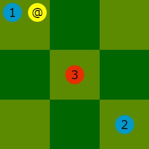
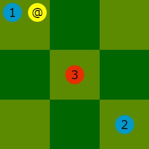

O trabalho BALTEK (as regras) de Lucas Borboleta está licenciado com uma Licença Creative Commons - Atribuição-CompartilhaIgual 4.0 Internacional.
Regras do BALTEK ⚽🏃
Introdução Copyright Revisões Material Objetivo Como começar Como jogar Notação dos movimentos Índices das versões ObrigadoBALTEK é um jogo de tabuleiro baseado em turnos, inspirado no futebol. Aqui estão os princípios:
O nome do jogo é construído usando sons das palavras bola
(BAL) e técnico
(TEK).
O trabalho BALTEK (as regras) de Lucas Borboleta está licenciado com uma Licença Creative Commons - Atribuição-CompartilhaIgual 4.0 Internacional.
Este documento é a versão 1.1 das regras de BALTEK.
A tabela abaixo resume as motivações para cada versão.
| Versão | Descrição |
|---|---|
| 1.0 | Redação das regras em francês. |
| 1.1 | Esclarecimento da opção de sprint. Dribble como o novo nome para o duelo. Notação mais compacta de movimentos. Escrevendo em HTML. Capturas de tela da implementação HTML / JavaScript. Traduções em inglês, esperanto e português. |

Aqui está o material, mostrado na imagem acima:
@.
a3, com a etiqueta
#, é o golo defendido pela equipe azul.
l3, com a etiqueta
#, é o golo defendido pela equipe vermelha.
As coordenadas e as etiquetas, @
e #
, são usados para a notação dos movimentos.
A seguinte imagem mostra as posições iniciais da equipe azul.

A seguinte imagem mostra as posições iniciais da equipe vermelha.

Correr
courircusta 1 crédito e permite mover um futebolista por 1 quadrado.
corrernão move a bola.
Exemplo: Possíveis destinos para o futebolista azul 3 têm bordas amarelas.

sprint
sprintcusta 1 bônus e amplia o movimento do futebolista até 2 quadrados.
sprintdeve ser sempre combinada com a ação
correr.
Exemplo: Possíveis destinos para o futebolista azul 3 têm bordas amarelas.

chutar
transmitir a bola para um futebolista,
enviar a bola em um quadrado vazioe
chutar a bola para o goloobedecem às mesmas regras.
chutarcusta 1 crédito. Se as condições gerais e as condições da força forem satisfeitas, a ação pode mover a bola até 2 quadrados horizontalmente, verticalmente ou diagonalmente. No entanto, a trajetória da bola nunca é curvada.
executor(um futebolista pronta a chutar) no quadrado inicial da bola.
executorainda não
chutou.
executorcompartilhe o seu quadrado com um oponente, o
executordeve:
drible
executormove a bola sobre um oponente, o
executordeve:
lençol.
Exemplo: os possíveis destinos para a bola pelo executor
azul 3
tem bordas amarelas;
nenhum desses destinos exige drible ou lençol.
dribble
chutarpode exigir essa compensação.
driblecompensa a fraqueza do
executorcontra o oponente que compartilha o seu quadrado.
driblecusta 1 crédito por unidade de força compensada.
Exemplos: para possuir a bola, o executor
azul 2 deve realizar um drible custando 1 crédito;
e o executor
azul 1 deve realizar um drible custando 2 créditos.


lençol
chutarpode exigir essa compensação.
lençolcompensa a fraqueza do
executoem relação ao adversário sobre o qual passa a bola.
lençolcusta 1 crédito por unidade de força compensada.
executorsenda a bola sobre um futebolista da sua equipe, então o jogador não precisa pagar o
lençol.
Exemplos: para transmitir a bola para o futebolista azul 2, o executo
azul 1
deve levar um lençol de 1 crédito no contexto à esquerda,
e um lençol de 2 créditos no contexto à direita.
 

Si utile, les coups de la partie se notent comme dans l'exemple suivant.
@d3 f3g3 d1e1 / h3g3 g5f5 i3h3 e1e2 d5e4 f5g4 / f5e4 g1f1 i1h2 @e4 @g4+ / g3g4 i5i4 @i4 ... @# /
Optionnellement, des annotations sont ajoutées comme dans l'exemple suivant.
#! BALTEK 1.1 #@ bernard@bois.fr robert@riviere.fr #: 2014-12-24 11:09:30 @d3 f3g3 d1e1 / h3g3 g5f5 i3h3 e1e2 d5e4 f5g4 / f5e4 g1f1 i1h2 @e4 @g4+ / g3g4 i5i4 @i4 ... @# / #: 2014-12-24 11:30:00 # Le bonus des rouges a été bien joué.
La notation est structurée en lignes. Voici ses conventions :
, optionnellement répété, sépare les mots.
#est un commentaire ou pseudo-commentaire, et est toujours optionnel.
# #! BALTEK 1.11.1du format de notation BALTEK ; utilisable une seule fois, en première ligne.
#@bleu, puis
rouge; utilisable une seule fois.
#:ISO, la date, puis optionnellement l'heure ; utilisable plusieurs fois.
bleu, suivi d'un tour
rouge.
/bleu. La fin de ligne termine le tour
rouge.
courirest notée par un mot commençant par la case de départ et finissant par la case d’arrivée. Exemple :
g3f3sprint,
*est ajouté en fin de mot d'action. Exemple :
g3e2*chutarest notée en un mot commençant par
@et finissant par la case d’arrivée. Exemple :
@c3tir au butest abrégé par le mot suivant :
@#
dribblecoûtant 1 crédit,
+est ajouté au mot de l'action. Exemple :
@c3+dribblecoûtant 2 crédits,
++est ajouté au mot de l'action. Exemple :
@c3++lobcoûtant 1 crédit,
!est ajouté au mot de l'action. Exemple :
@c3!lobcoûtant 2 crédits,
!!est ajouté au mot de l'action. Exemple :
@c3!!duelet
lob, coûtant chacun 1 crédit,
+!est ajouté au mot de l'action. Exemple :
@c3+!i.j.
1.0.
ié incrementado em 1, e o segundo índice
jé reposto para 0.
jé incrementado em 1 quando os textos ou ilustrações ou a notação dos movimentos ou a estrutura do documento evoluem ou uma tradução é adicionada, mas sem alterar a lógica das regras.
Agradeço aos meus filhos A
e C
por sua paciência e comentários durante os testes do BALTEK.
Minha esposa P
, que sempre pensa por um longo tempo durante os jogos de xadrez,
inspirou a criação do bônus de sprint para dinamizar o jogo de BALTEK; gradeço-lha.